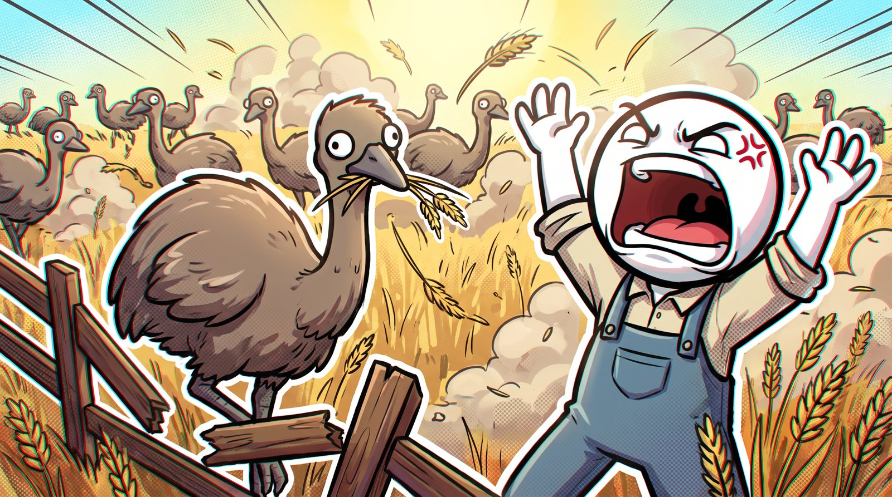
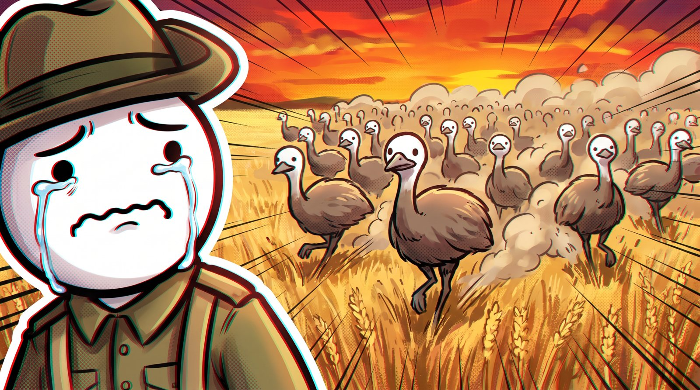
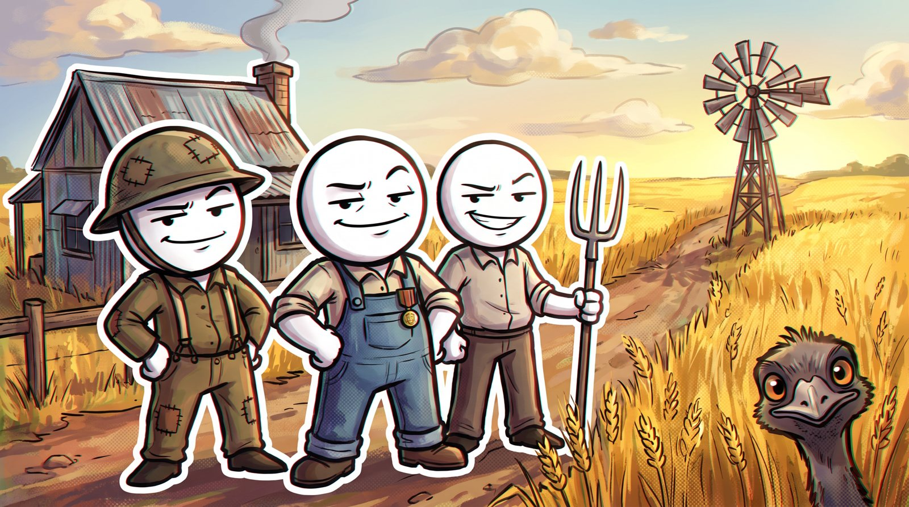
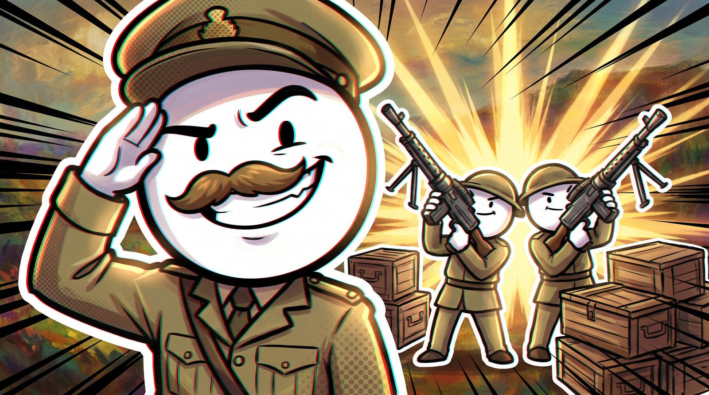
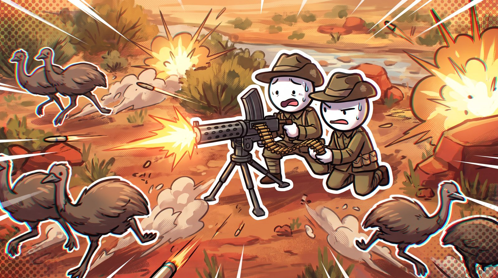
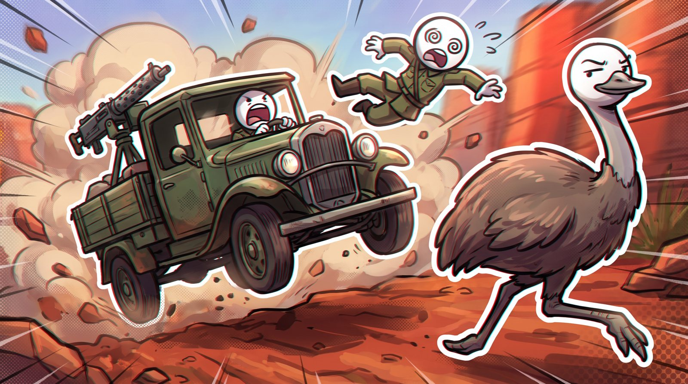
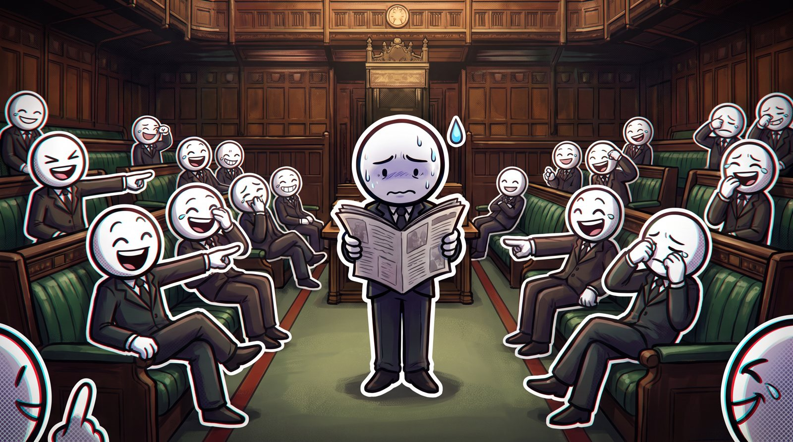
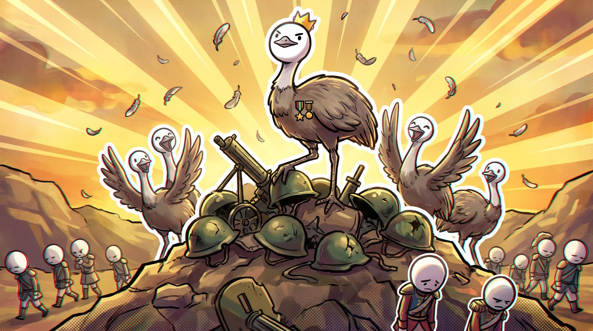
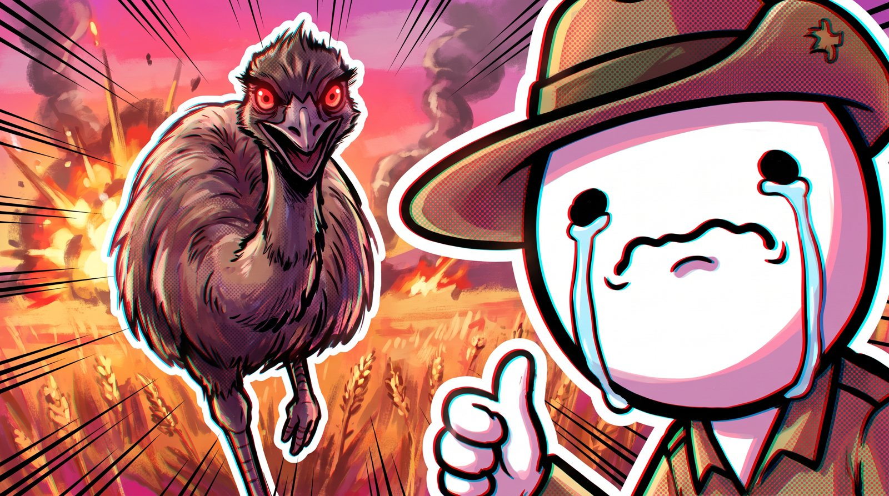

Ce qui fait marcher la chaîne : l'animation, les sujets, la construction d'un épisode. En fin de page, une maquette type d'épisode original, prête à produire.
Relevé le 26/09/2026 sur la page publique de la chaîne. YouTube bloque la lecture et les sous-titres sans connexion : l'analyse visuelle repose sur les miniatures, les chapitres, les descriptions et les compteurs de vues, pas sur le visionnage image par image.

Le contraste est l'idée centrale. Les personnages sont presque des bonshommes-bâtons, mais ils évoluent dans des décors peints avec lumière, fumée et feu. Le rendu final est poussé comme une couverture de comic.
Tête ovale blanche, yeux en points ou en traits, bouche très expressive (hurlement, larmes en cascade, sourire en coin). Le costume seul situe l'époque : casque, toge, bicorne, calot. Tout le monde a le même visage, et le gag vient de là.
Contour noir épais qui varie en largeur, hachures de vitesse, petites marques de rage (veine en croix), gouttes de sueur. Un liseré blanc autour des sujets principaux les détache du fond.
Murailles, palais en flammes, rue de far west : perspective réelle, éclairage dramatique, particules. C'est la partie « film ». Les persos simples tiennent le rythme ; le décor apporte le sérieux historique.
Trame de points type imprimerie, décalage rouge / cyan sur les bords, lignes de vitesse radiales façon manga, halo lumineux. Les miniatures sont très saturées, en magenta et orange.
Personnages découpés en morceaux (tête, bras, corps) animés en rotation et en rebond, beaucoup de caméra (zooms, travellings sur le décor peint), et des gags visuels « smash cut » qui interrompent la narration.
Du sang, des cadavres, des incendies, mais dessinés avec des visages de mascottes. Cette dissonance rend digestibles des sujets lourds (guerres mondiales, famines, massacres).
La bio de la chaîne résume la ligne : « Condensed Dramatized History Videos About Bizarre Events… in a Dutch pronunciation! ». Quatre familles de sujets reviennent. Les vues ci-dessous sont celles relevées sur les pages vidéo.
| Vidéo | Famille | Durée | Vues | Âge |
|---|---|---|---|---|
| The ENTIRE History of CHINA | Saga « ENTIRE » | 32:02 | 4 232 290 | 3 sem. |
| The Shortest War EVER | Record absurdeGuerre | 11:26 | 3 275 340 | 2 ans |
| That Time PIRATES started a COUNTRY… | Fait bizarre | 17:47 | 2 170 809 | 11 mois |
| Sieging Castles SUCKS actually… | Guerre / technique | 14:35 | 1 888 289 | 1 an |
| World War 1 (I was there) | GuerreSaga | 31:11 | 1 559 260 | 3 mois |
| The Dumbest Heist in History | Record absurde | 10:46 | 861 041 | 1 an |
Toute l'histoire d'un empire en 30–40 min : ENTIRE History of CHINA, of ROME, What happened to the Ancient World Wonders?. Les plus gros scores récents.
Superlatifs : Shortest War EVER, Longest War EVER, Dumbest Heist, This Country Disappeared 8 TIMES, Pirates started a COUNTRY.
How WW2 Began, World War 1 (I was there), WW2's BEST Soldiers (1 h 13), Fact-Checking Hitler, Sieging Castles SUCKS.
Portraits à charge ou attachants : Wu Zetian, The Philosopher Everyone Hates, Heisenberg: The Dumber Oppenheimer, How a Refugee became a Prince, The God of Horror.
The [Adj]est [Chose] EVERUn mot en CAPS pour le scroll, un superlatif vérifiable.
That Time [groupe] [fit un truc absurde]…Les points de suspension promettent une chute.
[Sujet noble] SUCKS actually…Casser une image romantique (châteaux, chevaliers).
The ENTIRE History of [PAYS]Promesse de tout comprendre en une séance.
Aucun texte. Un personnage en très gros plan qui pleure ou hurle, un décor en feu derrière, liseré blanc, trame, aberration chromatique.
Narrateur à la première personne, accent néerlandais assumé, apartés (« Whitebeard or something (im dyslexic) »), faux sérieux (« Source? It appeared in my dream », lien vers un vrai PDF de sources).
Chapitres qui se répètent (« Warring States 1… 7 »), segment final de fan-art (« OUR CHINESE DOODLIES »), épisodes découpés en « Disc 1–4 » comme un album.
Sponsor lu en début (War Thunder, QuillBot, mammouth.ai), membres de chaîne, Discord, site perso avec liens courts.
Exemple de référence : That Time PIRATES started a COUNTRY… (17:47). Chaque personnage important reçoit son chapitre, avec un surnom moqueur dans le titre.
Scène de chaos in medias res, puis une phrase qui pose la question absurde. Sponsor juste après.
« Pre-Spanish Succession War » : carte animée, trois phrases, un gag. Juste ce qu'il faut pour suivre.
Un chapitre par figure (« Benjamin HORNIgold », « Charles Vane (angry guy) », « Flamboyant Jack Sparrow »). Chaque bloc suit le même cycle : ascension, excès, chute.
« Woodes "bully" Rogers » : l'ordre revient, le ton se durcit, les décors s'assombrissent.
« Did everyone live or everyone die? ». Conclusion sincère, puis dernier gag, fan-art, appel à rejoindre la chaîne.
Sujet original, pensé pour la famille « record absurde » : la Grande Guerre des Émeus (Australie occidentale, novembre–décembre 1932). Le major G.P.W. Meredith part avec deux mitrailleuses Lewis et 10 000 cartouches contre des milliers d'émeus qui ravagent les cultures, et l'opération tourne au fiasco. Durée cible 13–15 min, 8 plans-clés ci-dessous, rendus dans le style de la chaîne.

Gros plan d'un soldat en larmes. Travelling arrière : la horde d'émeus au soleil couchant. Musique épique, puis coupure nette.
VO : « In 1932, the Australian army went to war. And lost. To birds. »

Présentation des fermiers : vétérans de 14-18 installés dans l'Ouest australien, crise de 1929, prix du blé en chute. Un émeu les observe déjà depuis le blé.
VO : « These farmers were WW1 veterans. They had survived the Somme. They would not survive this. »
Environ 20 000 émeus arrivent après la saison de reproduction et piétinent les clôtures. Gag : le fermier crie, l'émeu le regarde, continue de manger.
VO : « Twenty thousand emus. Zero manners. »

Carte d'entrée façon jeu de combat : Major G.P.W. Meredith, 2 mitrailleuses Lewis, 10 000 cartouches. Chapitre « Major Meredith (very confident guy) ».
VO : « He had machine guns. They had… feet. Surely this is fine. »

Les émeus se dispersent en petits groupes, hors de portée. Le montage accélère, les mêmes « MISS » reviennent en boucle comme gag récurrent.
VO : « The emus used an advanced military tactic called: running away in different directions. »

La mitrailleuse est montée sur un camion : le terrain est si cahoteux qu'on ne peut pas viser, et l'émeu tient la distance. Gag sonore des bosses.
VO : « Emus can run at 50 kilometres per hour. The truck could not. »

L'affaire arrive à la Chambre des représentants, la presse s'en moque, l'armée est retirée puis renvoyée. Décor plus sombre, rythme ralenti.
VO : « Meredith reported 986 kills for 9 860 rounds. That's ten bullets per bird. »

Bilan sincère (primes à l'abattage et clôtures ont fini par marcher), puis l'émeu couronné sur la pile de casques pendant que l'armée repart. Fan-art de la communauté et appel aux membres.
VO : « So did the army win? … Next question. »

Règles reprises des miniatures de la chaîne : zéro texte, un visage qui pleure en très gros plan, la menace juste à côté, fond en feu, lignes de vitesse, liseré blanc, trame et aberration rouge / cyan.
That Time Australia Declared WAR on Emus…
The Dumbest War in History (it was emus)
0:00 Emus 1, Humans 0 0:20 Wheat, Veterans and Bad Economics 1:30 20,000 Hungry Dinosaurs 2:40 Major Meredith (very confident guy) 4:00 Operation: Run Away 7:00 The Truck Idea (bad idea) 9:30 Parliament Laughs 11:30 Did Anyone Win? 12:40 OUR EMU DOODLIES
Ordre de travail pour un épisode de 13–15 min dans cette esthétique, sans copier les personnages de la chaîne : garder la recette (tête simple + décor riche), inventer son propre design de tête et sa palette.
Un fait absurde mais sourcé. Dossier de sources en PDF, lié en description.
1 800–2 200 mots, première personne, une blague toutes les 20–30 s, chapitres avec surnoms.
Enregistrer tôt : l'animation se cale sur le rythme de la voix et les silences comiques.
Storyboard comme ci-dessus, 1 plan toutes les 4–8 s, montage sur la VO.
Peinture digitale (Procreate / Krita / Photoshop), réutilisable d'un chapitre à l'autre.
Rig cut-out (After Effects + DUIK, ou Toon Boom / Moho), bibliothèque de bouches et d'yeux.
Trame, aberration, glow, lignes de vitesse, caméra 2.5D ; SFX cartoon et musique épique décalée.
Miniature sans texte, 2 titres en A/B, sponsor lu en début, fan-art en fin.